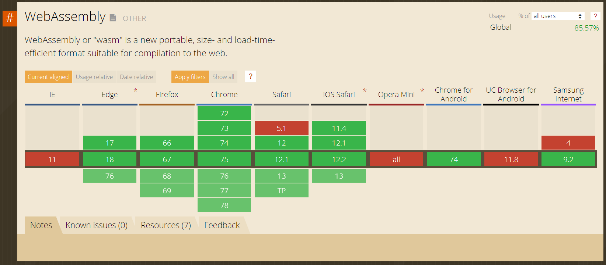
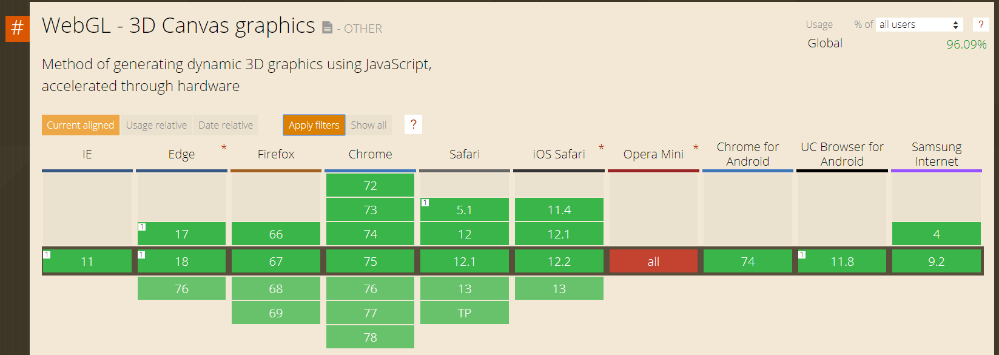
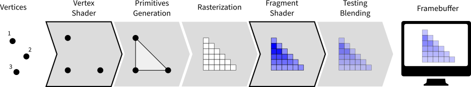

Rust for Web (Client) Development
with wasm32-unknown-unknown
Why Web Assembly?
Java Applets, Flash, Unity Plugin
DHTML with JavaScript
asm.js
JavaScript is bad for large-scale web applications.
Plugins are bad, because they're not vendor independent.
Compile-to-JavaScript, then asm.js. emscripten.
asm.js is bad for Unity, loading times of a minute or more.
WASM is a standardized platform-independent binary format that can be stream-compiled.
WASM can also be used for regular platform independent binaries.
WASM in web browsers uses the JavaScript sandbox, rather than having its own like Java and Flash. Allows exchanging data easily.

node.js also supports Web Assembly.
WASM Memory
No garbage collection (yet)!
Memory is just an ArrayBuffer.
Code requests memory amount, can grow later.
WASM is very minimal for maximum flexibility. The WASM code is supposed to do its own memory management.
The lack of a garbage collector resulted in many languages not being a good fit for being compiled to WASM, like Java, C#, python, Ruby. Rust is a great language for that, especially since it doesn't need a heavy runtime.
Memory addresses are just indices into this array.
JavaScript can access that ArrayBuffer just like a regular one.
JavaScript/WASM interactions can only pass numbers! But they can be indices into this array.
Install
rustup target add wasm32-unknown-unknown
Would be the whole story just for compilation, but not enough for the whole ecosystem!
Three Stages of Mappings
wasm-bindgen
js-sys
web-sys
WASM doesn't provide direct access to JavaScript APIs. wasm-bindgen can generate mappings for them, including converting common data types like strings.
Also maps Rust structs and impls into JavaScript! Can be used like regular JavaScript objects (no attributes, though).
Designed to provide a seamless transition once the official standard for accessing the browser API directly is implemented.
js-sys provides automatically generated mappings for standard JavaScript APIs (browsers and node.js) like Object, Number, Iterator, Array, ArrayBuffer, Date, etc
web-sys provides automatically generated mappings for browser APIs like fetch, the DOM, Canvas/WebGL, etc.
use wasm_bindgen::prelude::*;
// Import the `window.alert` function from the Web.
#[wasm_bindgen]
extern "C" {
fn alert(s: &str);
}
// Export a `greet` function from Rust to JavaScript, that alerts a
// hello message.
#[wasm_bindgen]
pub fn greet(name: &str) {
alert(&format!("Hello, {}!", name));
}
import { greet } from "./hello_world";
greet("World!");
wasm-pack command line tool generates the code mapping the two APIs in JavaScript (and loading the web assembly code) you can then import as a web module.
Howto
Works, but not a convenient development pipeline.
webpack
STATIC ASSETS
.png
.css
.jpg
.js
MODULES WITH DEPENDENCIES
.jpg
.png
.sass
.sass
.js
.sass
.cjs
.hbs
.js
One of the standard web development bundler tools. Not specific to Web Assembly, but can be used for it.
Also checks whether you have installed the development environment correctly.
Afterwards, you can use that module in your existing webpack project as a library.
Going Further
Why use JavaScript at all?
JavaScript in general is very heavily optimized these days, competes with C on performance.
JavaScript still faster for talking to browser APIs. This is going to change in the future!
But: JavaScript sucks as a language. Designed in a single weekend to add dynamic elements to static web pages, not full-scale web applications.
TypeScript solves some issues, but not all of them.
Event Handling
Based on github/rustwasm/wasm-bindgen/issues/1158#issuecomment-452342787
[dependencies]
futures = "0.1"
wasm-bindgen-futures = "0.3"
use wasm_bindgen_futures::spawn_local;
mod event_stream;
use event_stream::EventStream;
// <button id="mybuttonid">Click me!</button>
fn register_event() {
let button: HtmlButtonElement = document.get_element_by_id("mybuttonid")
.unwrap().dyn_into().unwrap();
let events = EventStream::<Event>::new(button.as_ref(), "click");
spawn_local(events.for_each(move |_event| {
Ok(())
}));
}
Unfortunately, that's still the old Futures API! However, the new API doesn't support streams yet anyways.
Web Frameworks
Yew (pronounced /juː/, the same way as "you") is a modern Rust framework inspired by Elm and ReactJS for creating multi-threaded frontend apps with WebAssembly.
Percy is a modular toolkit for building isomorphic web apps with Rust + WebAssembly. (isomorphic: same code on server and client)
Linked comparison page currently has 11 frameworks listed. All are immature right now.
Most of them are copies of react in some way.
After native plugins were phased out from browsers, web game developers needed a replacement for rendering graphics quickly.
Same process as for WASM, but a bit earlier.
OpenGL has been a cross-platform standard for 2D and 3D graphics since 1997.
In 2003, OpenGL ES as a subset was released for mobile targets.
Supported on all graphics hardware on the market and everything except Xbox in software.
To allow mobile devices to support WebGL, it's an adaptation of OpenGL ES.
Version Numbers
WebGL 1 → OpenGL ES 2.0 ↝ OpenGL 3.1
WebGL 2 → OpenGL ES 3.0 → OpenGL 4.3

Actual support on the device also depends on the graphics driver!
Why WebGL + WASM?
OpenGL was never designed for a scripting language like JavaScript.
It needs manual memory management in a language that doesn't support that.
Working with binary data is also more complicated than it needs to be.
Possibility of using the same code on web and native.
OpenGL Basics
Fully explaining how OpenGL works would need a whole semester course by itself. This will only cover the basic concept.
OpenGL Pipeline

Image source: https://www.labri.fr/perso/nrougier/python-opengl/
Vertices are an array buffer aka [f32].
Vertex and fragment shader supplied by the program, rest is hardware (but can be configured to some extent).
Vertex and fragment shader are written in a variant of C99.
Whether the result is 2D or 3D is just a matter of what the vertex shader does. OpenGL does not inherently do anything 3D.